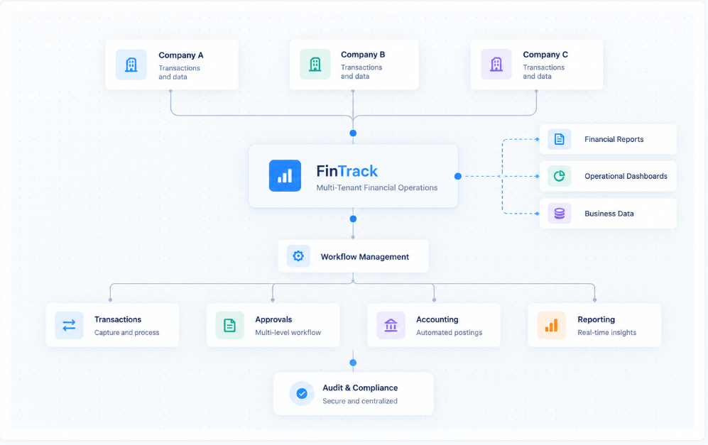

Payments and collections
UPI, cards, net banking, mandates and settlement handling.
Industries & Use Cases
In financial technology, correctness and traceability outrank everything else. Every transaction needs a ledger entry, an audit trail and a reconciliation path.
We build with those controls in the architecture, so compliance is a property of the system rather than a reporting exercise.

What we deliver
UPI, cards, net banking, mandates and settlement handling.
Application, underwriting support, disbursement and collections workflows.
Digital identity verification with risk scoring and re-verification.
Double-entry accounting reconciled against bank and gateway data.
Limits, velocity checks, screening and anomaly detection.
Scheduled reporting and audit extracts in required formats.
Outcomes
Onboarding and disbursement compress from days to minutes.
Differences are caught daily rather than at close.
Evidence is produced by the system when it is asked for.
Tell us where you are today. We will map the shortest route to a working solution.